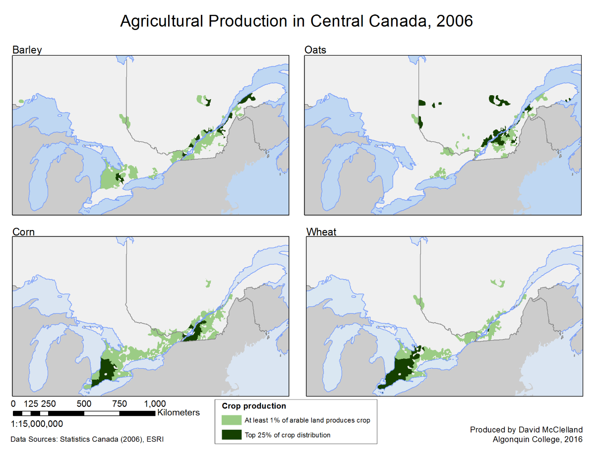

Kingston Ferry Docks Bathymetry Map
This map was produced for the Ontario Ministry of Transportation (MTO), as a guide to the water depths around a ferry dock operated by the MTO in Kingston, Ontario. The data was initially in a raw format, delivered from an external contract as sonar readings. The data was then converted to a point layer, and a raster dataset was created using an Inverse Distance Weighted interpolator. The density of the points available from the sonar data ensured that the interpolation should have an extremely low level of error. Contours and a hillshade were created from the resulting raster dataset to allow for easier interpretation of the information.
Note: The map layout was produced at a poster size, some detail was lost when the image was resized for the web
Reptile Fence Map
This is another map produced for the MTO, in this case a request from the Environmental section for a map of reptile fences along provincial highways in Eastern Ontario. The map was intended to be used in a presentation, so simplicity seemed to be the best approach. Only the most pertinent features were included, namely the highways, water features, and the fence locations themselves. Additionally, simple flat colours and symbols were chosen so that each feature could be easily distinguished and interpreted.
Small Mutiples Map of Agricultural Output

This map was produced for a class in the GIS program at Algonquin College, and shows the agricultural production of four different crops in Central Canada. Data from the Statistics Canada Agricultural Census was used, and the total area used for each crop in each census area was calculated. Only areas where at least 1% of the arable land is used for that crop are displayed. In addition, the top 25% of production areas for each crop were determined, and are displayed in a darker colour, to show where the most productive regions are in the study area.
This map was produced for a class in the GIS program at Algonquin College, and shows the agricultural production of four different crops in Central Canada. Data from the Statistics Canada Agricultural Census was used, and the total area used for each crop in each census area was calculated. Only areas where at least 1% of the arable land is used for that crop are displayed. In addition, the top 25% of production areas for each crop were determined, and are displayed in a darker colour, to show where the most productive regions are in the study area.